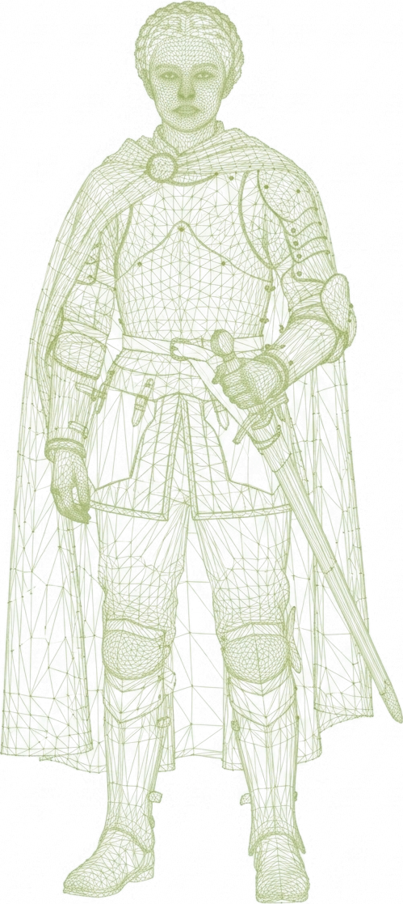

Figuren aus Dreiecken
Eine 3D-Figur ist eine Hülle aus Dreiecken. Jedes Dreieck hat drei Eckpunkte, und jeder Eckpunkt ist ein Punkt im Raum.
Auch der einfache Würfel besteht aus Dreiecken: Jede der 6 Seiten ist ein Viereck, das aus 2 Dreiecken zusammengesetzt wird. Schalte auf „Drahtgitter“, dann siehst du die Dreiecke.
Warum Dreiecke und keine Vierecke?
Drei Punkte liegen immer in einer Ebene, das Dreieck ist also immer flach. Vier Punkte liegen dagegen nicht immer in einer Ebene, ein „Viereck“ kann geknickt sein. Eine Grafikkarte, die nur mit Dreiecken rechnet, hat es deshalb einfach: Alles ist flach und eindeutig.

Haare sind ein Sonderfall
Einzelne Haare kann ein Spiel nicht berechnen, das wären Millionen. Stattdessen werden Haare aus schmalen Bändern gebaut, die jeweils eine ganze Strähne darstellen. Der Zopf der Ritterin ist ein paar Dutzend solcher Bänder.
Das Aussehen: Texturen
Ein Dreieck selbst ist nur eine Fläche. Damit es nach Stoff oder Metall aussieht, legt man ein Bild darauf, eine Textur. Das ist wie Geschenkpapier, das über die Dreiecke gespannt wird.
- Vier Punkte liegen nicht immer in einer Ebene.
- Dreiecke sehen schöner aus.
- Vierecke kann der Rechner nicht speichern.
- 6
- 12
- 8